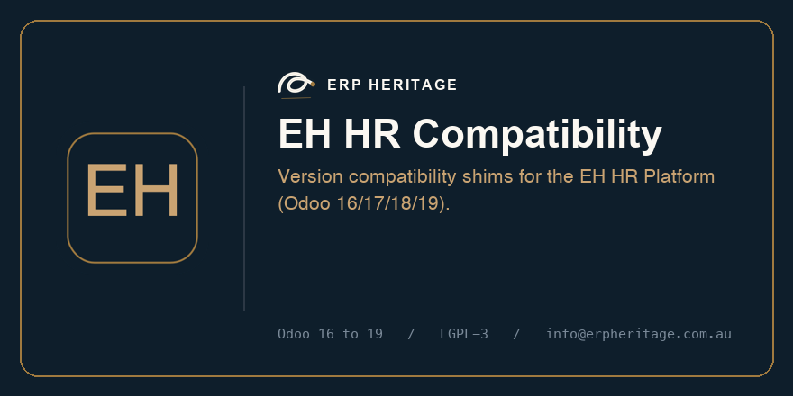

One codebase, four Odoo versions.
A version compatibility layer: API renames, field-name shims and safe migration helpers that let one authored source run on Odoo 16, 17, 18 and 19.

EH HR Compatibility is for teams running Odoo Community 16 to 19 that want one codebase, four Odoo versions handled inside Odoo, on the same audited platform as the rest of their HR, instead of in a side spreadsheet or a separate tool.
A separate system to buy, a custom build to commission, and an integration to keep alive. It installs from the standard Apps menu and shares the platform engines, so it behaves like the modules beside it from day one.
A version compatibility layer: API renames, field-name shims and safe migration helpers that let one authored source run on Odoo 16, 17, 18 and 19.
Version-aware API shims
Idempotent migration helpers
No business logic of its own, so nothing to maintain twice
Straight from the manifest and the source. No surprises.
Models this module adds
None of its own; it configures and connects existing models.
Standard Odoo models it extends
None directly; it stands on the platform engines.
Odoo dependencies: base
Install eh_hr_compat from the Apps menu. It pulls only its dependencies: base.
Apps → search "EH HR Compatibility" → Install
Install eh_hr_platform to deploy the entire EH HR Platform in one click. This module is part of it.
Apps → search "EH HR Platform" → Install
Every module on one architecture: extend standard Odoo HR, never duplicate it. Your current module is highlighted.
The same engineering choices run through every module, so the platform is stronger than a drawer of separate add-ons.
Built on standard Odoo HR and projected into the native models. No parallel tables, no duplicated fields, no data to reconcile later. Your reports and payroll keep reading the standard records.
Changes are written to a hash-chained log you can verify on demand. Show who changed what, and pass audits, without bolting on extra tooling.
Workflows, approval chains, policies and notifications are data. An administrator changes how the business runs, not a developer on a billable day.
Runs on Odoo 16, 17, 18 and 19 Community from a single codebase, with the automated test suite green on every one. Upgrade on your schedule, not ours.
Permissive LGPL-3, self-hosted on your own server. No per-user subscription, no usage caps, and no employee data leaving your control.
Documented service APIs, real automated test coverage, and listing pages that describe only what the software actually does, with no invented benchmarks.
Source-of-record models project into standard hr.* rows, so integrity lives in our chain while Odoo keeps reading native data.
An append-only log links each change to the one before it. Verify the chain on demand to prove nothing was edited after the fact.
One authored source, derived to each series by a build step, with the full unit suite run green on Odoo 16, 17, 18 and 19.
LGPL-3 and installed on your own server. No subscription to keep it running and no data leaving your database.
ERP Heritage builds premium, honestly engineered apps for Odoo Community. Every app extends standard Odoo rather than replacing it, runs unchanged across Odoo 16 to 19, and ships with real automated test coverage.
We describe only what the software does, with no invented numbers. The code is LGPL-3 and self-hosted, so it stays yours. Questions before you buy? Write to info@erpheritage.com.au.
Odoo 16, 17, 18 and 19 Community. One authored source targets all four; the 16 and 17 view layers are produced from it by a build step, and the full unit suite runs green on every series.
No. It is LGPL-3 and self-hosted, with no per-user fee and no usage cap. Once it is installed there is nothing recurring to keep it running.
Yes. It installs on its own and pulls only its dependencies (base). You can add the rest of the platform later, or install the eh_hr_platform bundle to get everything at once.
It extends it. The platform builds on standard Odoo models and shared engines; source-of-record modules project back into the native hr.* records, so you are never maintaining two copies of the same data.
Yes. It runs inside your own Odoo database on your own server. No employee data leaves your control, and nothing phones home.
Yes. The platform ships with an automated unit-test suite that is run green on Odoo 16, 17, 18 and 19 before release. The listing describes only what the code does.